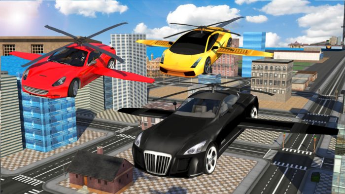

Will we have flying cars, or is it a hopeless dream?
You have to look closely at the details: the technology and the system that would allow cars to fly on an aerial highway.
Is it a completely unrealistic dream, one people had when they first saw an actual car on the road in 1886? Is it a dream because it has nothing to do with how we will travel in the future?
The concept of flying cars was developed by people who had not witnessed what we see today. It has many supporters today whose visions resemble those of people around 1900. It is easy to be influenced by an old dream. Believing in the concept of flying cars is to see reality through the eyes of another time.
First, we will not own our own vehicles once transport has been developed and regulated in ways different from those we see today.
Flying cars would use an incredible amount of energy to stay in the air, which would not be beneficial if they all used fossil fuels. Another technology could keep things flying without fossil fuels, powered by electricity, like vehicles in a Star Wars film.
And think of all the cars in the air blocking sunlight and making noise, not to mention safety aboard these flying death traps: vulnerable to hacking or major accidents in the air that could injure people both inside and on the ground. Think too of future cities with record-high buildings. Should we make room for homes, public spaces or flying cars? What about a combination: a tube system running from building to building?
It would be an all-in-one system, a multipurpose transport partnership between many kinds of capsules and vehicles, connected to a network — not flying cars that you drive yourself.
Transport technologies such as Hyperloop or driverless cars connected to a large network covering entire cities or countries may be more useful.
The only realistic flying-car concept is a self-driving vehicle that works as a service for everyone. A flying car you drive yourself is hopeless, but a flying vehicle connected to a network could make transport sufficiently accessible for all.
You watch too many films, I would say.
What if the flying-car concept had never been discussed or seen? The idea would not have existed.
Would any of us then long for the idea of a flying car, one you could drive high in the air? Definitely not.
But regardless of whether the idea would have existed, it seems that the idea of the flying car was destined to exist because the car itself was invented.
We will not use the term “flying car” much longer in the future, because it is an old term and an old concept.
It will be called something else, such as “The Main Transportation Grid Systems”.
“The Main Transportation Grid Systems”.
I am not an expert in how it all works, but I am trying to imagine what an average person would say about it in the near or distant future.
